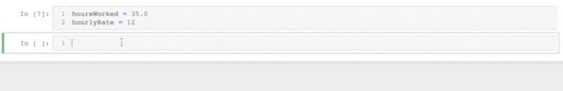

2b: Variables#
Learning goals:#
Explain the function of variables in programs
Articulate basic principles of variable naming
Recognize good and bad examples of variable naming
Recognize NameErrors and common fixes
What are variables?#
Variables are a named place in the computer’s memory where a programmer can store data and later retrieve it using the variable name.
Think of a variable as a box with a label on it. You can put stuff in the box, take stuff out of the box.
For example:
x = 12.2
y = 14
print("x has the value ", x)
print("y has the value ", y)
x has the value 12.2
y has the value 14
Python will remember what’s in the x and y boxes, so you can do more stuff with it.
Like this:
x + y
26.2
And this:
x > y
False
You can also switch out what is in the variable boxes.
For example, let’s change what’s in x box.
# first print what the value of x is
print("x is ", x)
# then change it
x = 100
print("x is ", x)
# and change it again!
x = y + 35
print("x is ", x)
x is 12.2
x is 100
x is 49
Variables are a kind of abstraction: a crucial element of computational thinking#
In computational thinking, we want to model data and develop/select algorithms to solve classes of problems, not just a specific individual problem. So one question programmers ask a lot is: what’s the underlying repeating structure here that I can or want to generalize and compose with other things?
Here’s a basic example of generalizing from “do multiplication with only these two specific numbers”, to “do multiplication with any two numbers” (i.e., the class of multiplication problems)
# a machine that multiplies 2 and 3
print(2 * 3)
# a machine that multiplies 4 and 5
print(4 * 5)
# a machine that multiplies 3 and 10
print(3 * 10)
# a machine that multiplies two numbers
x = 2
y = 20.5
print(x * y)
And another that goes from “add this specific person’s name to the end of each hello” to “add an input name to the end of each hello”)
# a machine that adds "Joel" to the greeting
print("hello " + "Joel")
# a machine that adds "Rony" to the greeting
print("hello " + "Rony")
# a machine that adds "Joel" to the greeting
username = "Joel"
print("hello" + username)
We could even generalize the greeting from hello if we want to!
# a machine that prints out a personalized greeting
username = "Joel"
greeting = "hello"
print("hello" + username)
# a machine that prints out a personalized greeting
username = "Joel"
greeting = "ni hao"
print("hello" + username)
# a machine that prints out a personalized greeting
username = "Joel"
greeting = "what's up"
print("hello" + username)
HowTo: Create and update variables#
We assign a value to a variable using an assignment statement, which consists of:
An expression on the right-hand side that tells you what value should go in the variable,
An assignment operator (
=), andThe name you want for the variable
NOTE THE DIFFERENCE BETWEEN = and ==!!!
# multiply 3 by 5 and put the resulting value in the variable box labeled "x"
x = 3 * 5
x
15
y = "joel" + " chan"
y
'joel chan'
Updating a variable also happens with an assignment statement
x = 3 * 5 # create the variable x and assign its initial value
print("x has the value", x)
x = 22 # update the value of the variable x with the value 22
print("x now has the value", x)
x has the value 15
x now has the value 22
Choosing names for your variables#
Syntax#
In terms of syntax (remember our division between computational thinking and coding? this is coding), there aren’t a ton of restrictions for naming variables:
Must contain at least one letter
Must start with a letter or an underscore (
_)Must not be a “reserved word”
Non-exhaustive list:
False,None,class,if,and,as,elseFull list here (can also Google “python reserved words”. Don’t need to memorize (you’ll naturally remember this over time), but definitely keep handy
So this is ok:
ten2 = 5
This is bad:
2 = 5
Running it will yield a somewhat helpful error message:
File "/var/folders/xz/_hjc5hsx743dclmg8n5678nc0000gn/T/ipykernel_21680/2360489726.py", line 1
2 = 5
^
SyntaxError: cannot assign to literal
Remember that bottom left bit? It says “syntax error” which is helpful: it basically always means there’s something about the way you wrote the code that’s not valid Python code. Think of it like a grammatical or spelling error in English. The bottom right bit, in this case? Not so helpful if you’re a beginner, but here it’s basically saying “hey you’re trying to assign a thing to a variable, but it’s… not a valid variable, it’s a value (literal)!”
This is also bad (None is reserved)
None = 6
Will yield this error message:
File "/var/folders/xz/_hjc5hsx743dclmg8n5678nc0000gn/T/ipykernel_21680/774819309.py", line 1
None = 6
^
SyntaxError: cannot assign to None
Semantics#
The more important piece is the computational thinking piece. How do you choose variable names that assist with your ability to formulate problems, model data, and debug your programs?
Our fundamental principle here is: choose names that make the logic of the program legible.
For example, consider this chunk of code:
# compute pay for an employee
a = 35.0
b = 12.50
c = a + b
print(c)
47.5
What do you think this code does? What do you think the value types of the variables should be? What about the operators/expressions? Do you spot anything that might be wrong here? (hint: there is no syntax error here, only a semantic one!)
How about now?
# compute pay for an employee
hoursWorked = 35.0
hourlyRate = 12
pay = hoursWorked + hourlyRate
print(pay)
47.0
Answer:
For me at least, the 2nd version makes it clearer that the program shouldn’t have + in there: it should be *, since pay is a function of hours worked times hourly rate.
Also, say an employee told you they needed to update their number of hours worked. Which variable would you need to update?
You’ll be surprised how often you can get unstuck simply by clarifying the names of the variables (which makes the structure of the program clearer, and the source of the problem obvious).
Example: debug a program that is supposed to compute a total check with 20% tip after accounting for 7% tax
# compute a total check with 20% tip after accounting for 7% tax
a = 15.00
b = 0.2
c = 0.07
d = c * (a + a*b)
e = a + d
e
16.26
Compare:
# compute a total check with 20% tip after accounting for 7% tax
baseAmount = 15.00
tipRate = 0.2
taxRate = 0.07
tipAmount = taxRate * (baseAmount + baseAmount*tipRate)
totalCheck = baseAmount + tipAmount
totalCheck
16.26
Answer:
For me at least, the 2nd version makes it clearer that the program is mixing up the tip and the tax rate!
tipAmount = taxRate * (baseAmount + baseAmount*tipRate)
Should instead be:
tipAmount = tipRate * (baseAmount + baseAmount*taxRate)
Again, these are the same exact programs, from Python’s perspective! The variable names make all the difference.
To sum up, you should feel free to name variables whatever makes sense to you, as long as you feel they accurately signal the logic of the program they’re in. Your future self (and current/future collaborators) will thank you for following this fundamental principle.
To reinforce the point, I recommend:
a collection of programming horror stories about variable naming here
this StackOverflow thread for discussion of the importance of variable naming (in the context of discussing code readability, a central thing we care about it in this class, enough to make it a rubric item on your Projects!). The thread includes some links to style guides from Microsof, Python, and other sources.
and this discussion of variable naming in a data science context
The NameError#
Remember: computers (and Python) are very literal. For variables, this means everything needs to be exactly the same when you’re referring to a variable.
For example, what do you think will happen if you run the following code?
myNumber = 125
anotherNumber = 65
mynumber + anotherNumber
Answer:
You should get an error with this message on the bottom:
NameError: name 'mynumber' is not defined
Remember our map for reading errors? Bottom left says it’s a “NameError”, and bottom right says “you’re asking me to do something with the variable mynumber, but I don’t know what it is: you haven’t defined it for me! It’s like asking someone who knows nothing about football, “what play did they run on third down?” (error: third down is not defined)
The NameError is probably going to show up a lot this semester. It’s basically this:

“not defined” = “I can’t find the box you’re asking me to find”
Reasons this can happen:
You misspelled the variable
You forgot to run an assignment statement that defined the variable before you asked Python to do something with it
For the first one, a fun tip in programming environments like this is to use the tab autocomplete feature. Basically, if you have a variable defined already, you can start typing in a later cell, hit tab, and the editor (e.g., Jupyter) will autocomplete for you. This helps reduce/eliminate misspellings. Nifty!
{kind=link}
If there are multiple similar ones, you can choose between them with arrow keys, like this:
{kind=link}
Managing “types” with variables#
Remember how we said that data types matter? Because some operators only work with certain data types?
This means you need to make sure you keep track of / control what data types are going in your expressions. If you never use variables, it’s a bit easier, bc you can clearly see what type the values are.
But with variables, keeping track of data types can be tricky in Python. This is because Python is a dynamically typed language. This means that when the computer runs a Python program, it dynamically guesses the “type” of a variable box. It also means that the type of data that can go in a variable box is “dynamic” (i.e., can be changed). This removes some of the overhead to writing code, but you do need to be careful, since Python’s guesses may not always match your intentions! And we know that mixing data types in statements leads to bugs.
Side note: if you’ve learned another programming language before, you might find this unfamiliar. For example, in Java, which is a statically typed language, you have to declare what type a variable is when you create it, and the type won’t change.
If possible, name variables in a way that signals their data type#
One strategy to help keep track of data types for variables goes back to variable naming! If possible, I like to name my variables in a way that suggests their data type.
For example:
userNameinstead ofa, which makes it clear that there’s probably some kind ofstrin there.isFunnyinstead ofx, which makes it clear that there’s probably abooleanin therenumCreditsinstead ofy, which makes it clear that there’s probably some kind of number in there
By convention, you might see people use certain names for certain kinds of things. For example, i is often used to refer to a counter value
s (or some variant of it) is often used to refer to a string.
Find out what type a variable is with type()#
You can use the built-in function type() to figure out what is inside a variable.
a = 1
b = 2
c = a/b
type(c)
float
a = "1"
b = 1
c = 1.0
print(a, "is a", type(a))
print(b, "is a", type(b))
print(c, "is a", type(c))
1 is a <class 'str'>
1 is a <class 'int'>
1.0 is a <class 'float'>
Aside: here I’m using a , to join multiple things into a string, instead of the +. Ignore it for now, but if you’re curious, the reason is this , operator tells Python to automatically convert all the things into strings before trying to concatenante them together.
You can also write an expression that can test this
# is a a string?
type(a) == str
True
“Casting” variables to change their type#
So what to do? If we really want to make sure that data types are what we expect them to be, we can use “cast” functions. These are the same name as data types, and they basically “force” a value to become a certain data type. You can pass in raw values (or “literals”) or variables.
For example:
# an int
x = 2
print("x is ", x)
print("x is a ", type(x))
# change to a str
x = str(x)
print("x is ", x)
print("x is a ", type(x))
# change to a float
x = float(x)
print("x is ", x)
print("x is a ", type(x))
x = int(x)
print("x is ", x)
print("x is a ", type(x))
x is 2
x is a <class 'int'>
x is 2
x is a <class 'str'>
x is 2.0
x is a <class 'float'>
x is 2
x is a <class 'int'>
Let’s go back to a common use case for this. Making sure that the data that will go in a math expression are all number types (otherwise we run into issues!)
# this will produce our TypeError
x = 3
y = "2"
x + y
Here’s a fix:
# if we want to do math, need to convert y to a number
x = 3
y = "2"
# cast the value of y to be an int before doing addition
x + int(y)
5
And if we want to make sure we’re doing concatenation:
# if we want to do concatenation, need to convert x to a string
x = 3
y = "2"
# cast the value of x to be an str before doing concatenation
str(x) + y
'32'
One thing to keep in mind: you can only cast something into a data type if it”looks like” the “literal” for that data type. Almost anything “looks like” the literal for a string, since you can just slap quotes around it and it becomes a string. But some data types are more fussy about their literals: for example, the literal for an int must be a valid set of digits.
So, for example, this will yield an error:
int("three")
Because "three" doesn’t “look like” the literal for an int, you can’t turn it into an int.
What do you think will happen with this? Feel free to paste this code into a jupyter notebook to find out!
int("$5,000)
Answer:
An error! It sorta looks like a number to humans, but notice what’s in there that’s not a number? The $ and ,! This is a common situation we’ll return to in the next module when we talk about strings (e.g., how to parse a string to get values we want out of it, such as numbers).